Applying MVC in VisualAge for Java
Downloads
I originally wrote this article for IBM's VisualAge Developer Domain, but support for VisualAge has been stopped and IBM has removed the article.
| A Note on reading this article as a tutorial: There are several steps you need to take to create the address book application outlined in this article. Along the way, the text describes exactly what you need to do, intermixed with descriptions of why you need to do this. Each major step is preceded by a box like this marked "Your Action!". This should help ensure that you don't miss any steps. Note the details of the action follow the box. |
The Model-View-Controller (MVC) design paradigm is an incredibly useful tool in writing maintainable programs. MVC lets you separate your business logic from your Graphical User Interface (GUI), making it easier to modify either one without affecting the other. Initially, MVC requires a little extra planning and coding, but the long-term benefits are well worth it.
When MVC was first publicized, visual composition tools were limited in capability and not nearly as popular as they are today. The visual composition tools of today, such as the VisualAge for Java Visual Composition Editor (VCE), support true visual programming, enabling you to visually create much of an application's GUI and business logic.
Unfortunately, this kind of simple visual programming has eroded solid design techniques. Many developers simply sit down at their desk, open the VCE, and start clicking the mouse. Rather than thinking through GUI and application designs, they experiment. Eventually they get things to "look right," then draw lines to "make the application work."
This article discusses the MVC design paradigm and demonstrates its application in visual programming. Keep in mind that MVC is but a single technique in a developer's design arsenal, and should be used in combination with other techniques, including object-oriented analysis and design.
You can download the VAJ repository sample code for this article, or plain zipped sample code for this article. The sample code uses AWT components, but all techniques apply equally to Swing and to other GUI component libraries.
What is MVC?
The MVC paradigm was introduced by Smalltalk developers at Xerox PARC (Palo Alto Research Center) in the late 1970's. The basic idea is to split your application into three distinct parts, each of which can be replaced without affecting the others:
- Model - the data of your application, along with the business logic that defines how to change and access that data. The model can be shared among any number of view and controller objects.
- View - The means of presenting the model's data to the outside world. This could take the form of a GUI, generated speech, audible tones, printouts, or even non-user oriented output, such as turning on an air conditioner.
- Controller - The means of gathering user or other environmental input and providing feedback to the model, normally changing some of the data in that model.
Interaction Between Components
Let's examine the interaction between these three pieces. Initially, the view, and possibly the controller, ask the model for its current state. The view may present data to the user, and the controller may check the data to help decide how to handle user interaction.
Figure 1. Model and user interface communication
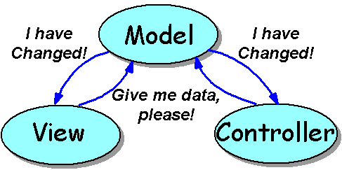
As seen in Figure 1, the view and controller will typically "listen" for changes to the model. The Java language implements this notification using events. Whenever the model says "I have changed," the view and controller can ask for the new state of the model's data, then update their presentation to the user.
Figure 2. Controller to model communication
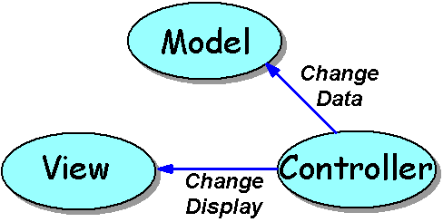
Figure 2 shows user interaction in the application. If the user decides to interact, the controller takes charge. It watches for user input, such as clicking or moving the mouse or pressing keyboard keys. It decides what the interaction means, and asks the model to update its data and/or the view to change the way it displays the data.
For example, you could have a view that displays a set of data in a Swing JList component. You add a scrollbar as a controller, which directs the view to change which items are displayed. Further, you could add another controller, perhaps a Swing JTextField, to take user input and ask the model to add the new value to the set. Of course this would cause the model to shout "I have changed!", to which the view responds by asking for the set of data.
The above scenario has two controllers. One watches for mouse interaction with a scrollbar, while the other accepts user input to add to the model. You can have any number of controllers, and any number of views in your application.
Suppose you have an application that presents information from a database in a table and pie chart. The table can be scrolled using horizontal and vertical scroll bars, and new data can be entered via a pair of text fields. The MVC pattern might be applied as shown in Figure 3.
Figure 3. Multiple views and controllers
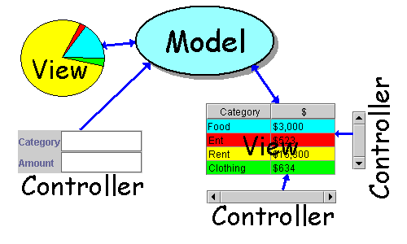
This example includes a model, two views and three controllers. The scrollbar controllers update only the table view, while the text field controller updates the model.
Delegates - Combining View and Controller
You may be concerned at this point about separation between the scrollbars and the table they scroll. In theory this separation is good, but in practice it can make life much more difficult:
- You need to separate the GUI among multiple VCE sessions, and provide promoted variables and events to communicate between the controller GUI and the view GUI
- Where does an AWT TextField go? It acts like a view to display existing data, and like a controller to change the data.
- Many components have built-in support for user interaction such as scrolling.
- Interaction between multiple controllers and views can be quite heavy and complex.
Because of such issues, the MVC paradigm is often simplified by combining views and controllers. There are several names for this approach -- this article uses the name delegate to refer to a combined view/controller. (This is the term used by Sun in describing the Swing GUI components.). This combination into a delegate is shown in Figure 4.
Figure 4. Combining view and controller into a delegate
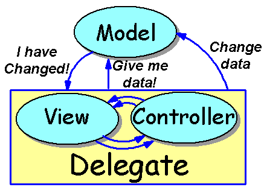
In a delegate, the view and controller communicate as necessary to perform their duty. It is a good idea to keep this communication separate when possible, but often it's impossible to break a component into a view or a controller. And, in practice, the separation doesn't provide nearly as significant a benefit as separation of the Model and Delegate.
The delegate as a whole communicates with the model in the same way described earlier for the view and controller. The separation between the model and the user interaction of the delegate is the key to the success of this model. Although this version of MVC is somewhat simplified by the combination of the view and controller into the delegate, the design is still MVC-based. You can use it to create some interesting and very flexible applications in VisualAge for Java.
Why is MVC So Important?
By this point you may be thinking, "Sounds like neat theory, but it also sounds like a lot of work!" You're right on the first point, but as you'll see later, implementation in VisualAge for Java is actually very easy! Another question might be "Why is MVC so important that Scott would take the time to write this article?" Development typically occupies 10% or less of a program's life cycle. Therefore, program maintenance should be a developer's number one concern. A clean, understandable design is a good start, but to be really effective, the design should separate business logic from user interface.
Think about some of the possible ways a program changes over time:
- The current state of GUI design evolves, and a company decides to update their GUIs. (Often this is referred to as "making the GUI look more professional.")
- A company changes network architectures, and wants to port their applications.
- A company decides to create a limited-feature demo of their application.
- A company wants to add a new way of examining existing data.
Changes like these often involve either the GUI or the business logic of an application. If the GUI code and business logic are tightly coupled, making these changes can be quite difficult. Using an MVC-based design makes the changes less extensive, and more importantly, more isolated, reducing the chance of introducing bugs in unrelated code.
Using an MVC-based design, the above changes are fairly simple:
- Updating the GUI requires only changing GUI code. The stable business logic is not touched.
- Updating network architectures, perhaps changing from a two-tier to a three-tier database architecture requires modifying only part of the model. The stable GUI is not touched.
- Creating a limited feature demo might merely be a matter of subclassing the model to block access to some features. Again, no change to the GUI.
- Adding a new way to examine data is simply a matter of adding a new view. Often no change to the model is necessary, nor is it necessary to change other views!
A final thought on the importance of MVC: by separating the business logic from the GUI, you can also separate the coding tasks. Separate developers can work on each part, for instance -- a GUI specialist coding the GUI and a domain expert coding the business logic.
Implementing MVC in VisualAge for Java
Note: This article assumes VisualAge for Java, version 3.0. The techniques explained will also work with VisualAge for Java version 2.x, but you cannot use the Quick Form support to create your GUI.
Now that we've laid out the concepts and rationale, let's look at implementation details by walking through a simple address book application. Being good MVC designers, we decide to split the application into models and delegates. We design the application with a two-level model:
- Address Book - A model that stores a collection of addresses. The interface that defines this model requires methods to add and look up individual address records.
- Address Data - A model that represents a single address record. Many of these will be stored in an Address Book.
We choose this two-level model because it helps show that MVC can be applied at many levels in an application. You can use MVC when creating GUI components (such as Sun's Swing components), as a good division of labor for your entire application, or at any level in between. Models can contain references to other models and delegates can contain references to other delegates.
To understand the creation of this application, you can break the design into four phases:
- Define a model interface - Define how the model and delegate communicate. Defining a protocol (or contract) between them is best represented in Java by writing an interface class.
- Define concrete model(s) - Implement the interface to create actual model classes for use in an application.
- Create delegate(s) - Create a delegate (GUI) class that has a variable of the model interface type. The GUI can communicate with the model, and any model class that implements that interface can be plugged in at run time.
- Connect as an application - Finally, create an application by simply connecting one or more delegate classes with a concrete model class.
We will create a concrete model that stores the data in a hash table, but the actual data location does not matter. In part 2 of this series, we implement filtering and sorting models and discuss how you can use data from other sources, stored in data bases or on other machines.
Defining a Model Interface
The first step in defining an MVC application is to define how your model and delegate will communicate:
- How will the model inform the delegates that it has changed?
- What data can the delegates obtain from the model, and how do they access it?
- What data can the delegates request be changed, and how do they request it?
Model-to-Delegate Change Notification
Several issues are involved with change notification. The first and most important is the granularity of the notification. You can notify at several levels. For example:
- You can fire an event that says "something's changed," without giving details. The delegate then needs to examine all the data to determine what has changed. This is effective if the delegates will normally need to reread all the data after any change. For example, Swing provides a generic ChangeEvent for just this purpose.
- You can simply use JavaBean bound properties as the available data in your bean. PropertyChangeEvents are fired any time one of the properties changes, which effectively limits the scope of the change notification. This approach works well when you have a one-to-one correspondence between properties and the GUI components that represent them to the user.
- You can create a custom event class and listener interface that captures specific information about the nature of a change. For example, Swing's TreeModel fires a TreeModelEvent to its TreeModelListeners. The TreeModel can be more specific about the type of change, telling its listeners that nodes were added or removed from other nodes, structure has changed for some subtree, and so forth. This allows the delegate to update its presentation more efficiently; if the updated area doesn't affect the current display, nothing changes.
Bound Properties and GUI Components
We can take advantage of the JavaBean specification's definition of bound properties to assist in creation of our models. Bound properties are properties that fire a PropertyChangeEvent any time their value changes. We can use this as the "I've changed" notification from our model.
We can also take advantage of bound properties in our GUI components. VisualAge for Java provides excellent support for bound properties in the form of property-to-property connections. Two bound properties connected via a property-to-property connection will update each other's values when they change.
Assuming we have bound properties in the model and in the delegate, much of the communication between a model and a delegate can be accomplished through a property-to-property connection!
The problem is that Swing and AWT do not bind properties that should be bound. For example, TextField does not bind its text property. Fortunately, we'll be using the Quick Form dialog in the VCE, and that makes dealing with changes in a TextField easy. For Swing components, however, we would need to create a BoundJTextField. For a discussion on how to do this, see Binding a Non-Bound Property at the VisualAge Tips and Tricks site. Note that this article will be using a TextField.
Making Things Easier in VisualAge
VisualAge for Java provides excellent tools for developing classes, but not much support for developing interfaces. The above four-step process assumes we define the interface first, then implement that interface with concrete classes. Because we're using bound properties in our model, it would be much easier to start with a concrete model. The BeanInfo editor in VisualAge for Java provides a very easy way to define a bean with bound properties. We will use the BeanInfo editor to flesh out a concrete model, then create a model interface based on that concrete class.
Once we have the interface, we can implement any other models we like and plug them into our application.
To create this interface, you can use the AutoGut tool, a plug-in for VisualAge for Java. AutoGut examines a class and creates an interface by "gutting" the methods from that class. We'll walk through the use of AutoGut in a moment, but first you need to download and install the tool. You can get AutoGut from http://www.javadude.com/tools/autogut. Follow the instructions on that page to install the tool.
Example Models
Using the JavaBean bound property approach mentioned above, we will create an example that tracks telephone and address information for various users. Two levels of models are involved -- a small model to track a particular address record, and an overall model to track all addresses.
- AddressDataModel - A model that represents a single address record.
This will contain the following properties (all are of type String and are
read/write/bound)
- name
- address
- city
- state
- country
- postalCode
- businessPhone
- homePhone
- AddressBookModel - A model that represents a collection of
addresses. This will contain the following methods:
- public AddressDataModel find(String name) throws Exception
- Locate a name in the address book. If not found, throw a simple exception.
- public void add(AddressDataModel data) - Add a new record in the address book.
- public AddressDataModel find(String name) throws Exception
AddressBookModel also contains the following property:
- addresses - Bound, indexed, read-only String
We implement these models by first creating the following two concrete implementations of the models:
- SimpleAddressData - an implementation of AddressDataModel that uses String variables to store the address information.
- HashAddressBook - an implementation of AddressBookModel that stores addresses in a Hashtable.
By defining these two classes and gutting them, we can automatically create the required interfaces
Defining SimpleAddressData
| Your Action! Create the SimpleAddressData class including all of its properties. |
Create a new class in VisualAge for Java. Start doing this by pressing the green "C" button on the toolbar, as shown in Figure 5.
Figure 5. Starting the Create Class SmartGuide
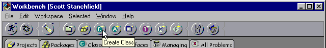
Then fill in the class details as shown in Figure 6. You can use whatever package you want to if you're following along (this applies to all examples in this article). Note that we do not check the "Compose this class visually" box, but we do check "Browse this class when finished." Once you have filled in the details, press the Next button to move to the second page of the Create Class SmartGuide.
Figure 6. Create Class SmartGuide for SimpleAddressData (page 1)
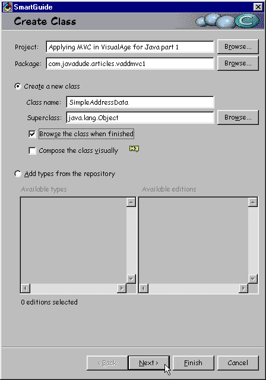
On the second page of the SmartGuide, shown in Figure 7, we make the class implement Serializable. This is the sole requirement to make the class be a JavaBean. To support better code generation, we import java.io (avoiding full qualification of Serializable in the class declaration) and java.beans (to assist when adding properties). When you have finished entering the information on this page, press the Finish button to continue.
Figure 7. Create Class SmartGuide for SimpleAddressData (page 2)
This SmartGuide creates the SimpleAddressData class and opens it to a class browser. Select the BeanInfo tab of the class browser to open the BeanInfo editor.
Once in the BeanInfo Editor, press the "P" on the toolbar to add a property, as shown in Figure 8.
Figure 8. Starting the New Property Feature SmartGuide in the BeanInfo Editor.
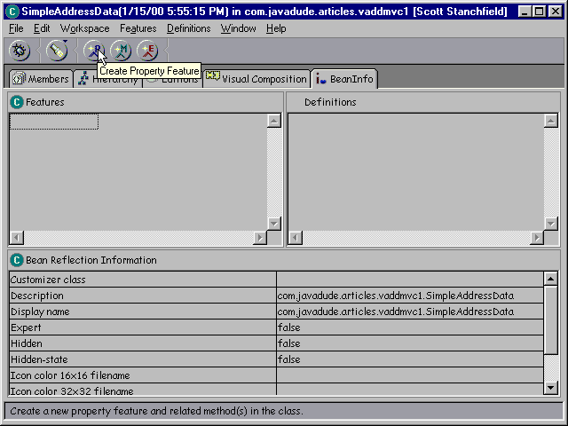
This invokes the New Property Feature SmartGuide. You will use this SmartGuide to add properties to your class. We start with the name property. Enter its information as shown in Figure 9. You should only need to change the property name; the rest of the fields should come up with the proper defaults.
Figure 9. Creating the name property
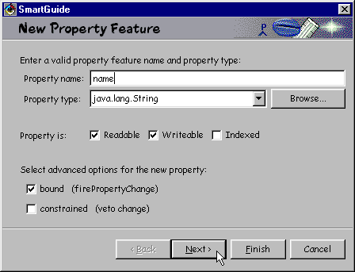
Press the Next button after you fill in the property name, and you'll see the second page of the New Property Feature SmartGuide. Fill in the information shown in Figure 10, and press Finish. We checked the preferred box to make the property easier to access.
Figure 10. FiIling in the name property's bean information
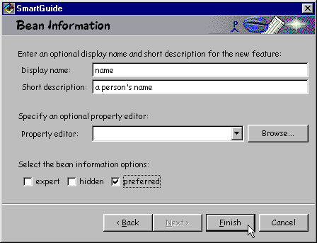
Repeat the property creation for the following properties in the SimpleAddressData bean.
|
Property |
Display Name |
Short Description |
| address | address | the street where the person lives |
| city | city | the city where the person lives |
| state | state / province | the state or province where the person lives |
| country | country | the country where the person lives |
| postalCode | zip / postal code | the zip or postal code where the person lives |
| businessPhone | business phone | the person's business telephone number |
| homePhone | home phone | the person's home telephone number |
Congratulations! You now have your first concrete model. You can now close the class browser for SimpleAddressData.
Defining AddressDataModel
| Your Action! Create the AddressDataModel interface using the AutoGut tool. |
Now we can easily create our model interface for our address data records. Assuming you installed AutoGut (http://www.javadude.com/tools/autogut) as mentioned earlier in this article, bring up the popup menu for SimpleAddressData and select Tools->Create Interface from Class, as shown in Figure 11.
Figure 11. Starting AutoGut
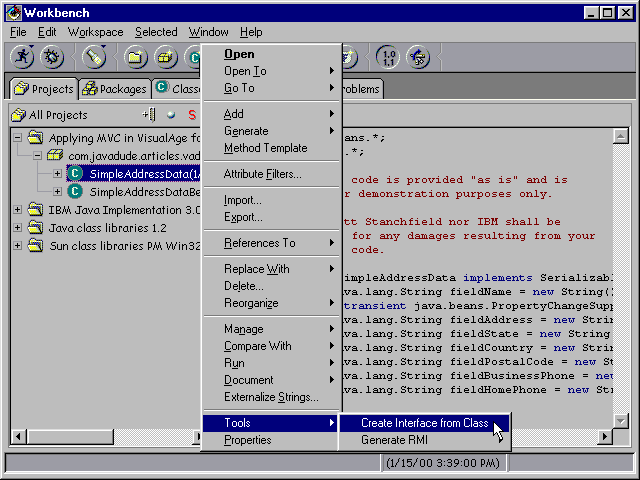
This invokes the AutoGut tool, seen in Figure 12. Fill in the information shown in Figure 12 and press the Ok button. Note that if you choose a package that is in the workspace, the project field will automatically fill in for you.
Figure 12. Specifying the interface to create
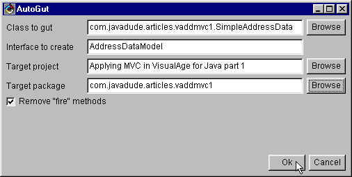
AutoGut can only work on a single class at a time; if there are multiple classes selected it will fill in the name of the first-selected class. When you press the Ok button, AutoGut will create the specified interface in the specified package and project (creating the package and project if they do not exist). AutoGut copies the method declarations of all public methods (excluding constructors) from the class to the new interface. If you check the "Remove fire methods" box, it skips any methods that begin with the word "fire".
In this example, we do not need to modify the resulting interface. However, keep in mind that AutoGut does not currently copy import statements to the new interface, and you may need to add those import statements by hand.
We now have an interface that represents any piece of address data.
| Your Action! Make AddressDataModel extend Serializable. |
You need to change the definition of AddressDataModel slightly to ensure other beans that use it can serialize their referenced components. Modify the AddressDataModel interface definition to look like the following. The bold text shows the changes.
imPORT 69,140,9,132,235,61
ss SmartGuide (press the "C", shown in figure 5 above) then filling in the SmartGuide as shown in Figures 13 and 14. This is much easier if you select the target package (in the example code, com.javadude.articles.vaddmvc1) before you press the "C", and VisualAge will fill in the project and package for you.
Figure 13. Defining HashAddressBook (page 1)
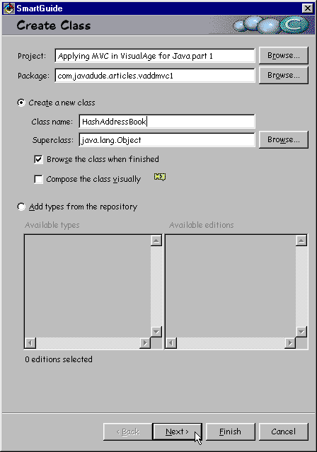
Figure 14. Defining HashAddressBook (page 2)
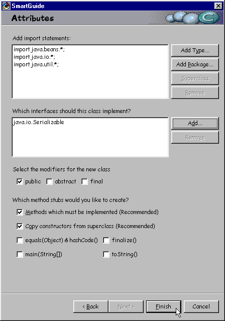
Note that we import java.util in the second page of the SmartGuide. We need this for the Hashtable.
Once the class browser appears, select the BeanInfo tab. We need to add a property and two methods. First, start adding a property by pressing the "P" on the toolbar (shown in Figure 8 above). Fill in the first page of the SmartGuide as shown in Figure 15. Note the Indexed box is checked and the Writeable box is not checked. Note that when you choose the property type, do not type the open and close square brackets (" [ ] "). These are added by VisualAge when you check the Indexed box. You should press the Browse... button to choose AddressDataModel from the list. Note that in this example, the full name of the Property type is com.javadude.articles.vaddmvc1.AddressDataModel; the field isn't long enough to display the whole thing. By using interface AddressDataModel as the type, we can store any kind of address data in this address book, as long as that address data implements AddressDataModel. This includes, but is not limited to, SimpleAddressData, as it implements AddressDataModel.
Figure 15. Defining the addresses property
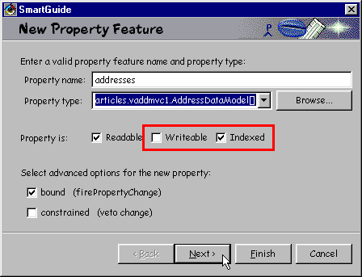
On the second page of the SmartGuide, enter "addresses" as the display name, "list of all addresses" as the description (both without quotes), and check the Preferred box.
Next, we need to add the find and add methods.
| Your Action! Add find() and add() methods to the HashAddressBook class. |
While still in the BeanInfo Editor, press the "M" button on the toolbar to open the New Method Feature SmartGuide. Enter the information shown in Figure 16 and press the Next button. Note that the return type is AddressDataModel, not SimpleAddressData. This allows us to lookup whatever type of data is stored, as long as the data implements interface AddressDataModel.
Figure 16. Adding the find() method
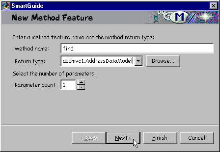
After entering the data and pressing Next, you are presented with a parameter page for each parameter indicated. Because you only specified one as the Parameter count on the first page, we only see one parameter page. On this page, shown in Figure 17, specify the name, type, and descriptive information for the name parameter. Then press Next.
Figure 17. Specifying the parameter to the find() method
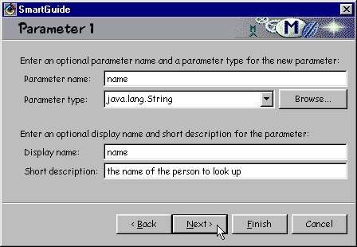
Finally, we see the Bean Information page for the find method, shown in figure 18. Enter the information show, and press Finish. The BeanInfo Editor then creates the find() method for us.
Figure 18. Specifying the details for the find() method
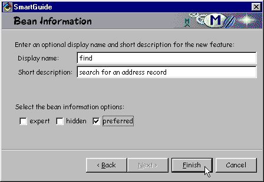
Repeat this process for the add() method, as shown in Figures 19, 20, and 21.
Figure 19. Starting to create the add() method
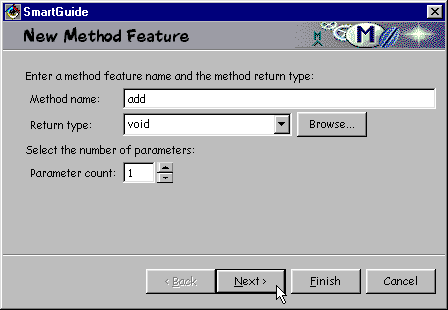
Figure 20. Specifying the parameter to the add() method
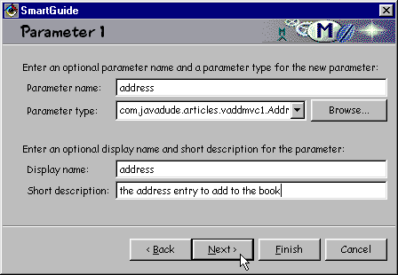
Note that the parameter is of type AddressDataModel, not SimpleAddressData!
Figure 21. Specifying the details for the add() method
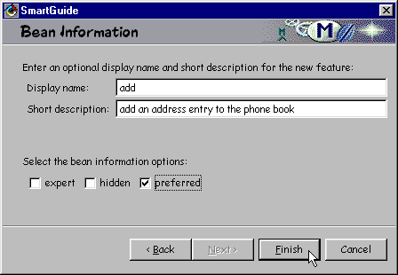
Defining AddressBookModel
| Your Action! Run AutoGut to create AddressBookModel from the HashAddressBook class. |
Like AddressDataModel, AddressBookModel is an interface. Create AddressBookModel the same we you created AddressDataModel: using AutoGut. To do this, bring up the popup menu for HashAddressBook and select Tools->Create Interface from Class. This invokes AutoGut (seen in Figure 12 above). Specify AddressBookModel for the interface name, and choose the same package that contains your other classes and interfaces (the sample code uses com.javadude.articles.vaddmvc1).
| Your Action! Edit AddressBookModel to extend Serializable. |
Again, we need to add "extends Serializable" to the created interface. Edit AddressBookModel's interface definition to look as follows. The changes are in bold text.
import java.io.*;
public interface AddressBookModel extends Serializable {
}
| Your Action! Add AddressBookModel to the "implements" clause of HashAddressBook. |
We need to add AddressBookModel to the implements clause of HashAddressBook. Edit HashAddressBook and change its declaration to look as follows. The bold text indicates the change. You do not need to change anything else in this declaration.
public class HashAddressBook implements Serializable, AddressBookModel {
...
}
Now we can use a HashAddressBook instance anywhere we need to talk to an AddressBookModel.
Filling in the Implementation Details for HashAddressBook
| Your Action! Fill in the details for HashAddressBook. |
So far, we have defined our concrete models and model interfaces. The interfaces are finished, but our HashAddressBook is missing the details it needs to perform its task.
First, edit the class definition for HashAddressBook add add the text in bold.
public class HashAddressBook implements Serializable, AddressBookModel {
private Hashtable records = new Hashtable();
private int count = 0;
...
}
This creates a Hashtable named records in which we store our addresses, and a count of how many addresses we have. We need count to help us process the addresses property, as we'll see in a moment.
Next, edit the add method and change its code to the following:
public void add(AddressDataModel address) {
if (records.get(address.getName()) == null)
count++;
records.put(address.getName(),address);
firePropertyChange("addresses",null, getAddresses());
}
This code stores the record in the hash table, and increments the count if there wasn't already a record with the same key.
Now, edit the find() method and change its code to the following:
public AddressDataModel find(String name) {
AddressDataModel data = (AddressDataModel)records.get(name);
if (data == null)
throw new RuntimeException(name + " not found");
return data;
}
The find() method searches for an entry and returns it, or throws an exception if not found. Note that we're using RuntimeException for convenience here. You can replace it with a custom exception, perhaps a PhoneListingNotFoundException. Keep in mind that this would affect your model interface, as you would need to add a throws clause to the method declaration. For this example, we stay with a RuntimeException, which does not require a throws clause.
Finally, we modify the getAddresses() method. This method returns the list of addresses in the model. For this particular model, our data is stored in a Hashtable. The getAddresses() method simply creates an array with the Hashtable's contents and returns it. Note that a more efficient implementation could provide a cache array -- once we generate the array, keep it until a new address is added.
public AddressDataModel[] getAddresses() {
// convert the contents of the Hashtable into an array
Enumeration e = records.elements();
AddressDataModel[] result = new AddressDataModel[count];
int i = 0;
while (e.hasMoreElements())
result[i++] = (AddressDataModel) e.nextElement();
return result;
}
The getAddress(int index) method will work ok as it is, as it calls the above getAddress() method. Note that there is no setAddresses(); the add() method acts like a way to change the address list.
| Your Action! Pat yourself on the back; you are done with the models! |
Creating Delegates
Now the fun part: developing a delegate! We'll create a simple GUI to present the models, and connect the GUI components to those models.
This article explains how the GUI and the model are connected, but does not discuss the layout design of these GUIs in this article. For details on layout management, see my article "Effective Layout Management" at http://developer.java.sun.com/developer/onlineTraining/GUI/AWTLayoutMgr/index.html.
The first delegate we create represents a single AddressDataModel instance, allowing the user to easily edit the data. This delegate contains fields for each property in the AddressDataModel, with property-to-property connections between those fields and the model.
VisualAge for Java, version 3.0, provides a tool that can automatically create this delegate for us. This option is called Quick Form, and we'll walk through using it now.
Note: Unfortunately, Quick Form generates a GridBagLayout for the form. While this is highly unsettling for me, it is automated, so I can live with the results as it makes it easier for everyone to generate this delegate.
| Your Action! Create the AddressDataModel class. |
To create this delegate, first create a class named AddressDataEntryFormUI. We're borrowing the naming convention of using "UI" from Swing's Model-Delegate implementation. Create the class using the Create Class SmartGuide, and fill in the details as shown in Figures 22 and 23.
Figure 22. Creating class AddressDataEntryFormUI
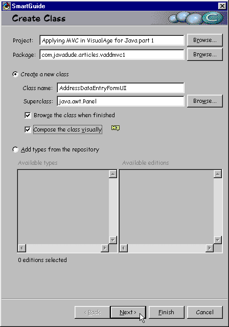
Notice that this time we checked the box marked Compose the class visually. IBM fixed this option with the release of VisualAge for Java 3.0. It used to disable the Next button when checked, but now it works correctly. Note that we have also specified java.awt.Panel as the superclass.
Figure 23. Specifying the imports and interfaces for AddressDataEntryFormUI
Here we chose some extra imports to cover the AWT GUI that we're creating. Again, we're creating a JavaBean, so we must implement Serializable. When you press the Finish button, the class is generated and opened to the VCE.
| Your Action! Add a variable for the model interface to the visual design. |
The visual design looks as pictured in Figure 24. Select the Choose Bean... option as shown in figure 24.
Figure 24. Invoking the Choose Bean dialog
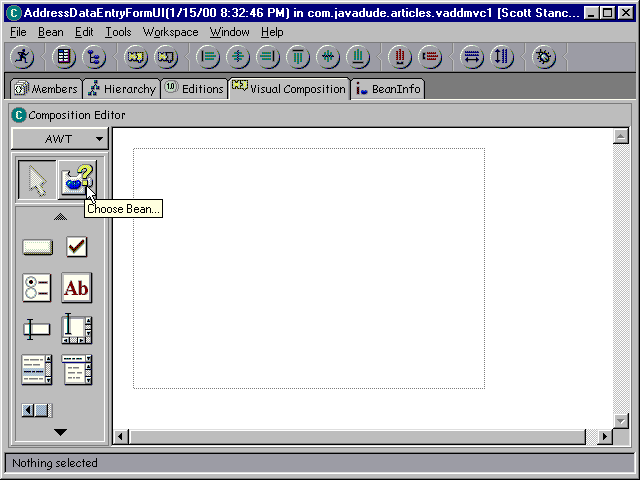
This brings up the Choose Bean dialog, seen in Figure 25, so we can choose to drop a variable of type AddressDataModel in the visual design. Make sure you select "Variable" as the Bean Type! This will let us plug in any instance of any class that implements AddressDataModel.
Figure 25. Choosing a variable to drop in the VCE
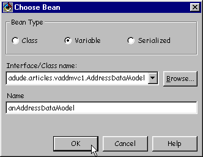
When you press Ok, the mouse becomes a crosshair pointer. Drop it somewhere outside the dotted-line panel and you'll see a resulting design like that in Figure 26.
Figure 26. A variable in the VCE
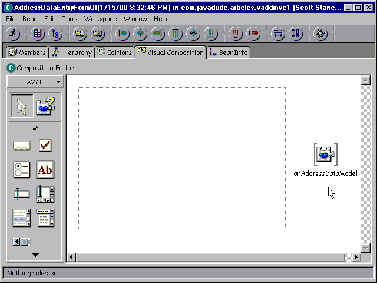
Now the fun part. We'll use the Quick Form command to create a form that represents all of the properties in the variable. We want the GUI to look something like the GUI pictured in Figure 27.
Figure 27. An entry form GUI
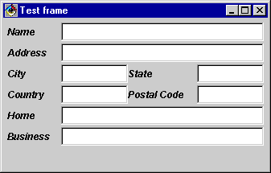
Quick Form uses GridBagLayout to display its contents, but we'd like that GridBagLayout to reside in the top section of our panel.
| Your Action! Change the panel's layout to BorderLayout. |
We need to set the layout of our panel to BorderLayout, and place the resulting Quick Form in the NORTH. Double-click inside the dotted rectangle representing our panel and change the layout property as shown in Figure 28.
Figure 28. Set the layout to BorderLayout
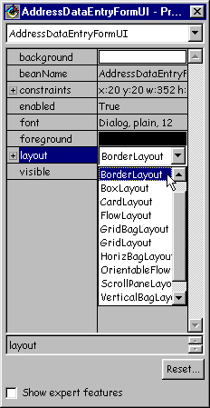
| Your Action! Use Quick Form to create the GUI. |
To create the form, bring up the popup menu for variable anAddressDataModel and choose Quick Form, as shown in figure 29.
Figure 29. Starting the Quick Form generation
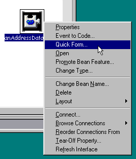
Choosing this option invokes the Quick Form dialog, seen in Figure 30.
Figure 30. Choosing a Quick Form
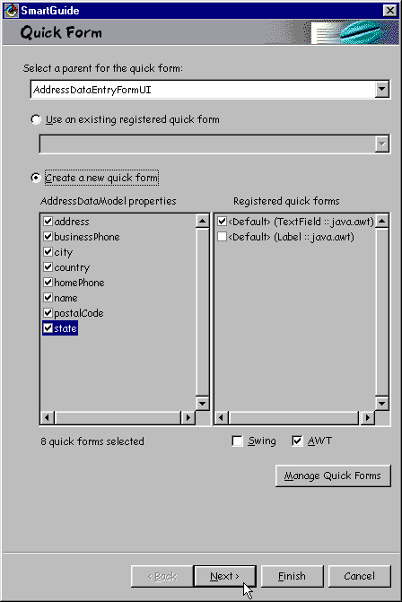
In the Quick Form dialog, you select the parent container in which you want to create the form (you are given a choice of all empty Containers in your visual design) and the type of form to create.
The two available quick forms, TextField and Label, don't help us much here. We need to set up a quick form definition that will provide a two-way update between the TextField to the String property. Press the Manage Quick Forms button. This displays the Quick Form Manager dialog (Figure 31), to which you can add new forms. Note that the Quick Form Manager can also be accessed from the main options dialog (Window->Options).
Figure 31. Managing new Quick Forms
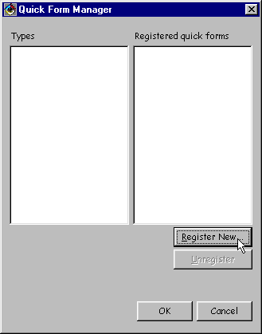
Press the Register New... button to create a new Quick Form property definition. This displays the Register Quick Form dialog, as seen in Figure 32.
Figure 32. Defining the TextField<->Sting form
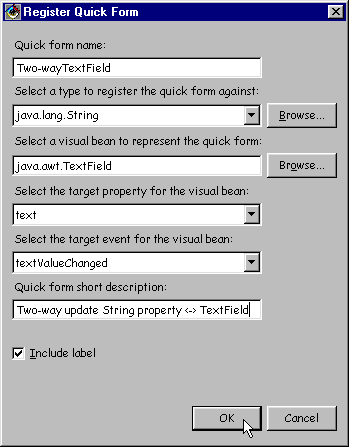
Fill in the details specified above. This definition can be used for any String property in the model, and it will update that String property whenever the text in the TextField changes.
Note: If you were developing a Swing GUI and wanted to use a BoundJTextField as defined in Binding a Non-Bound Property, you would specify BoundJTextField as the visual bean, text as the target property, and text as the target event. This means that whenever the text property in the BoundJTextField changes, send the data to the String property.
After filling in the Quick Form definition, press the Ok button, and you'll be returned to the Quick Form Manager dialog (Figure 31). Press Ok again and you'll be returned to the Quick Form SmartGuide page in Figure 33.
Figure 33. Changing the form used for the properties
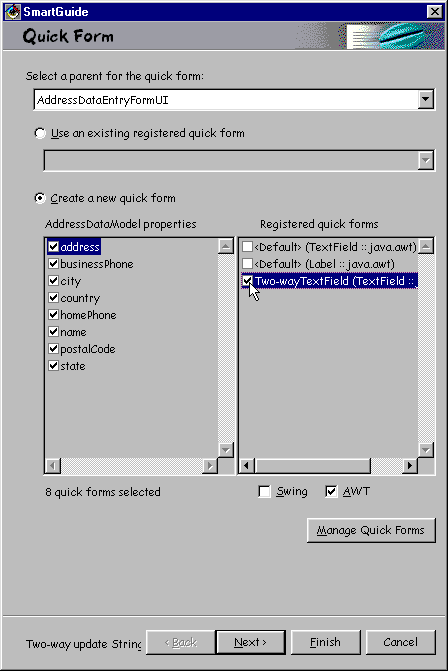
You need to select each property in turn, and change the quick form listed in the right-side List to Two-wayTextField. Make sure you do this for each property.
When finished, press the Next button to continue.to the Quick Form Layout page, seen in Figure 34.
Figure 34. Defining the Quick Form Layout
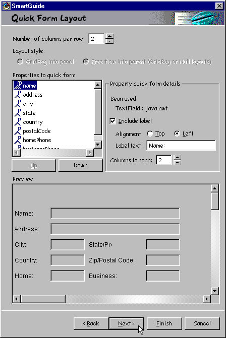
Here's the tricky part. All those parameters.
Number of columns per row. Specifies how many properties appear in each row. Each property is represented by a Label/TextField pair. Because we want at most two properties in a row (for City/State and Country/PostalCode), we set this value to two.
Layout style. In this instance we have no choice. The resulting GridBagLayout will be placed into the parent, which has a BorderLayout. (The selected radio button should really be GridBag into panel, meaning that the Quick Form dialog creates a new panel for the form, and drops that panel into our selected parent. This is the action that is performed anyway.) If the selected parent container does not have a layout or is a GridBagLayout, you can select either choice:
- GridBag into panel. Quick Form creates a new panel to contain the form and drops that new panel into the selected parent container.
- Free flow into parent. Quick Form creates the form components and drops them into the parent container. This option is only available if the parent container has a null layout or a GridBagLayout. Never select this option for a null layout or the resulting form is absolutely positioned; it will not resize when the user resizes the window (note that you can change the parent container's layout to GridBagLayout afterwards and the VCE will attempt to set the constraints on all components. This usually works well, but does not always have the effect you want.)
Properties to quick form. On the previous page, you selected which properties to add to the quick form. On this page, you select the order and constraints for those properties.
- First, use the Up/Down buttons to change the order of the properties to name, address, city, state, country, postalCode, homePhone, businessPhone. This defines the left-to-right, top-to-bottom order of the displayed component pairs for each property.
- Next, select each property and define their Property quick form details.
For all properties, we leave Include label selected (which adds a
Label for property) and set Alignment to Left. Set the Label
text and Columns to span as defined in the following table.
Property
Label text
Columns to span
name Name 2 address Address 2 city City 1 state State/Province 1 country Country 1 postalCode Zip/Postal Code 1 homePhone Home 2 businessPhone Business 2 - Here's some quick details on what these details do. Note that the details
may vary slightly for different kinds of GUI beans used.
- Bean used. Shows the GUI bean you selected on the previous page for the selected property.
- Include label. Specifies if you want to have a Label component appear above or to the left of the GUI bean.
- Alignment. Does the label appear above (Top) or to the Left of the GUI bean?
- Label text. The text to appear in the label. This is initially the name of the property, first-letter capitalized.
- Columns to span. How many property columns should this component span in the resulting layout. In this example. those with value 1 give room for a second property in that row. Those with value 2 (the Number of columns per row value) take an entire row to display.
Preview. Shows what the resulting form will look like. Note that this dialog is fairly narrow, and the resulting layout can expand based on the window size.
Press the Next button to continue. The final page of the Quick Form dialog gives you a chance to save this form definition. This is useful if you want to create this same form again in other GUIs. Leave the options as it (no save) and press Finish. In general, it is a much better idea to create reusable classes like this delegate and drop an instance of the class in another GUI, rather than constantly recreate the form using Quick Form.
The resulting form appears in Figure 35. Note that it resides in the NORTH part of the BorderLayout. The VCE treats NORTH as the first component of the BorderLayout, so when we generate the Quick Form its panel is dropped in the NORTH section.
Figure 35. The resulting form
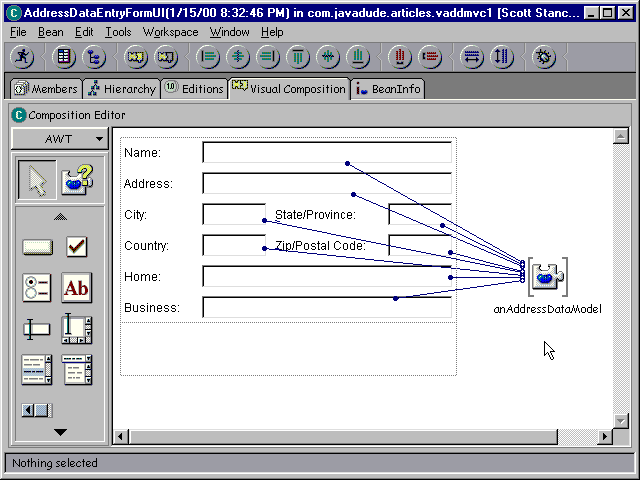
Note the generated property-to-property connections. Each of these connections flows from the variable to the GUI. This means that any time the variable changes, all property values are passed to the GUI. Because we used a quick form that specified textValueChanged as the target event, bound text fields in the GUI, any time the text in the field changes, the data in the object that the variable points to is updated.
There's one more thing we need to do to finish this delegate.
| Your Action! Expose the variable by promoting its this property. |
The final step in our AddressDataEntryFormUI delegate is to make the model variable accessible outside this bean. We do this by "promoting" it, as follows. Bring up the popup menu for the variable and choose Promote Bean Feature..., seen in Figure 36.
Figure 36. Starting to promote a feature
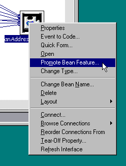
This option allows you to make a feature of a contained bean visible as a feature of the bean we're creating. In this case, we want to make the variable visible, so we promote its this property. We call the resulting property model. In the Promote features dialog, select this under the Property list, and then press the >> button, as shown in Figure 37.
Figure 37. Selecting this
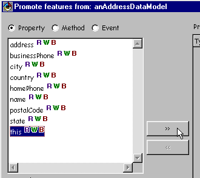
Then, double-click on the Promote Name for the this property and change it to model, as seen in Figure 38.
Figure 38. Changing the promote name
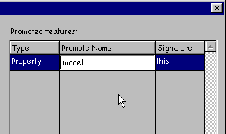
| Note: It is very important that you do not
press Enter or simply click the Ok button when you are done changing the
name! If the name you choose happens to conflict with a name you
chose in the visual design the promotion dialog will attempt to promote
the property, report an error, but still perform part of the promotion!
After typing the new name, click on an empty part of the dialog, like the spot where the cursor is in Figure 38. This validates the name before ending the dialog. |
When finished, press the Ok button.
Promoting the this feature creates getModel() and setModel() methods that directly access the anAddressDataModel variable. We can now access all the form data from the outside of the AddressDataEntryFormUI bean!
Note that after creating the form, you can modify the GUI components as you like. For example, you could change the fonts of the labels to look as shown in Figure 39. The Quick Form is a one-time generation.
Save the bean! You should really save the bean as often as you think about it in the VCE.
Figure 39. Improving the look of the delegate.
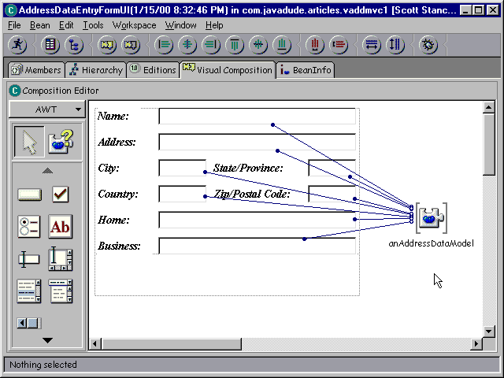
This is a very simple design with only property-to-property connections, and any AddressDataModel implementer can be plugged in from the outside.
A Delegate for AddressBook
| Your Action! Create the AddressBookUI class. |
Our AddressBookUI delegate will contain an instance of our AddressDataEntryFormUI delegate, as well as buttons to add and look up names. We start by creating AddressBookUI, extending java.awt.Panel. Note that we always use Panel (or JPanel for Swing GUIs) as the superclass of a delegate. This allows us to drop an instance of this delegate inside another delegate or application if we want to later. We are not limiting the GUI by using Frame, Dialog, or Window as the superclasss.
Enter the class details as shown in Figures 40 and 41.
Figure 40. Defining class AddressBookUI
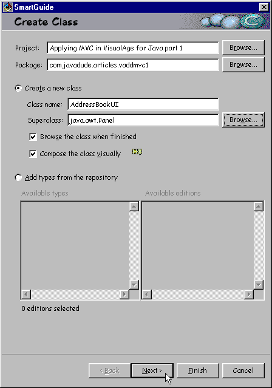
Figure 41. AddressBookUI imports and interfaces
After you have created the class, open it to visual composition, and create the GUI seen in Figure 42. A description of what was done to create this GUI follows the diagram.
Note: For the following VCE screenshots, I've turned off the toolbar and pane titles. You can turn these off via Window->Options->Appearance.
Figure 42. The Address Book user interface
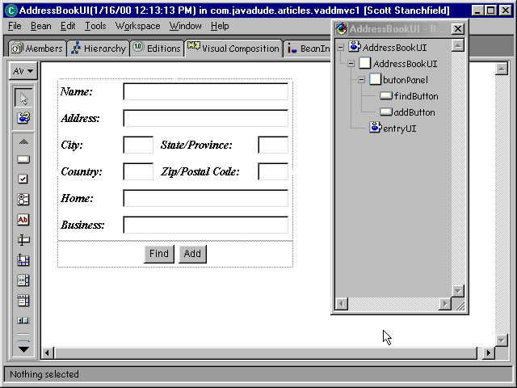
| Your Action! Create the AddressBookUI GUI. |
The layout of this GUI is as follows:
- Panel BorderLayout (created by VisualAge as the
superclass)
- Panel BorderLayout (contentsPane, created
by VisualAge)
- CENTER=AddressBookEntryFormUI
- SOUTH=Panel FlowLayout(CENTER)
- Buttons for Find and Add
- Panel BorderLayout (contentsPane, created
by VisualAge)
Make sure you choose Class as the bean type when adding your AddressDataEntryFormUI! See Figure 43 for this option.
Figure 43. Make sure you pick "Class" as the bean type -- we want an instance
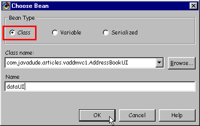
Save the bean!
| Your Action! Drop variables to represent the address data and address book models. |
We need to be able to work with models for the overall address book (so we can add/remove addresses) and a specific address that we can display in the entry form. To do this, drop two variables in the VCE using the Choose Bean tool . Select the variables as specified in Figure 44 and 45. Make sure you select Variable as the Bean type.
Figure 44. Adding the anAddressDataModel variable
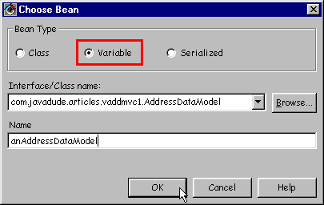
Figure 45. Adding the anAddressBookModel variable
Add these variables to the design as shown in Figure 46.
Figure 46. Placing the variables in the design area
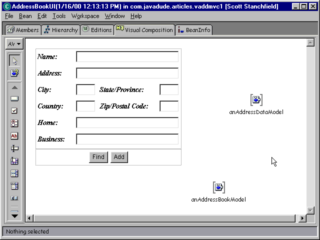
| Your Action! Connect the anAddressDataModel variable to the model property of the entry form UI. |
We need to associate the anAddressDataModel variable with the AddressDataEntryFormUI. We want to set it up so that any time the variable changes, the model in the UI changes. We can do this using a property-to-property connection. Start this connection by bringing up the popup menu for anAddressDataModel and choosing Connect..., as seen in Figure 47.
Figure 47. Starting a connection from anAddressDataModel
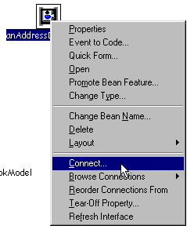
This brings up the Start connection dialog shown in Figure 48. Select Properties at the top of the dialog and this as seen in Figure 48.
Figure 48. Choosing the "this" property
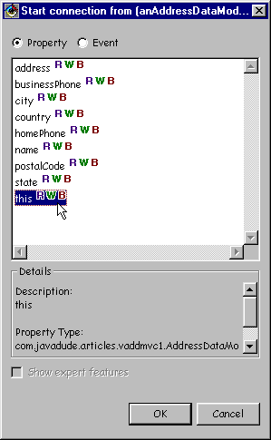
After selecting this, press Ok and the mouse will turn into a spider cursor. Move the spider cursor over the AddressDataEntryFormUI as shown in Figure 49.
Figure 49. Choosing the target
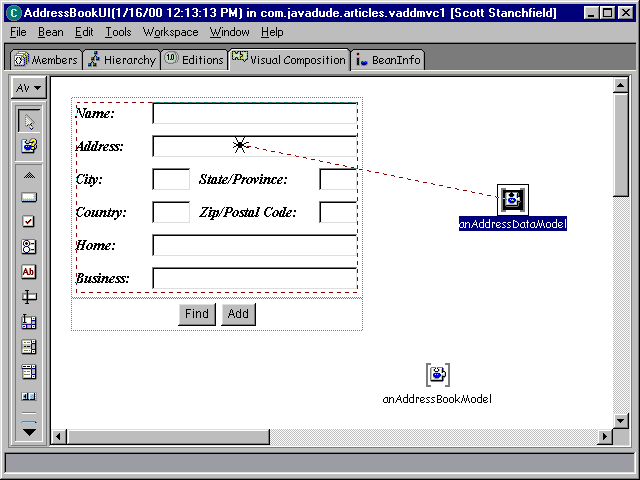
Click on the delegate and choose Connectable Features..., seen in Figure 50. Note that if we had made the promoted model property of the entry form delegate a preferred feature, we would see it directly in this popup menu. (In case you're wondering, you can do this by opening AddressDataEntryFormUI to the BeanInfo Editor, select model in the Features pane, change its preferred attribute in the bottom pane, then save the changes.)
Figure 50. Selecting a target feature
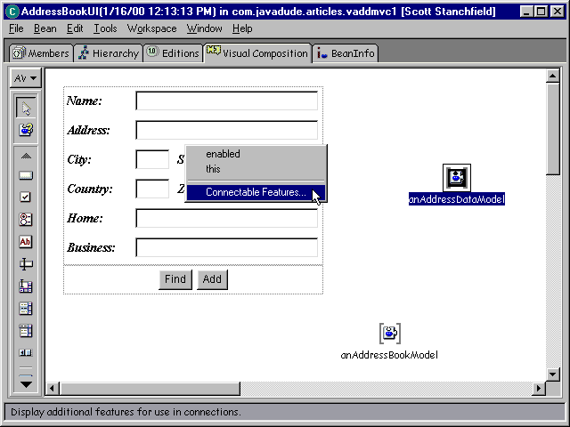
Selecting Connectable Features... displays the End connection dialog. Choose model, as shown in Figure 51.
Figure 51. Choosing the model property
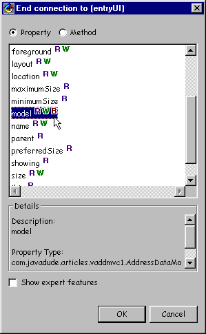
Press Ok after choosing the model property, and you have completed the connection. The connection appears in Figure 52.
Figure 52. The model connection
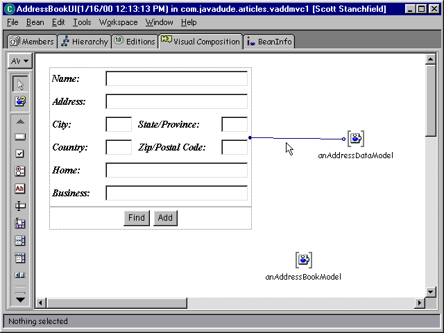
| Your Action! Create the Find button connections. |
We need to create the actions that the Find command should perform. These actions are pretty simple. The "Find" command should:
- Call find() in the AddressBookModel
- Pass in the name from the name property value in anAddressDataModel
- Set anAddressDataModel to the result of the find method
To accomplish this, we create the following connections. First, choose Connect->actionPerformed from the Find button's popup menu as shown in Figure 53.
Figure 53. Start the connection when the button is pressed (actionPerformed)
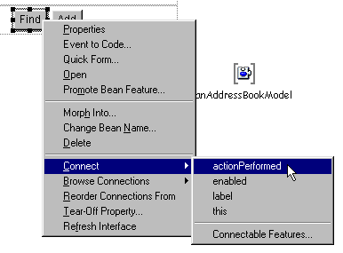
Move the mouse to anAddressBookModel, as in Figure 54.
Figure 54. Move to anAddressBookModel and click
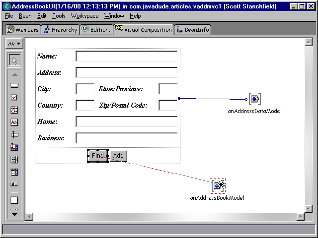
Click on anAddressBookModel and you'll see the End connection dialog in Figure 55.
Figure 55. Choose the find() method
Choose the find() method and press Ok. The resulting connection appears in Figure 56.
Figure 56. The first connection - the dashed line means it's incomplete
Note that the connection is dashed. This means it's incomplete. We need to provide a parameter to it, the name of the person to find in our phone book.
Bring up the popup menu for the connection and choose Connect->name. Make sure the cursor is on the connection when you click or you won't see the right popup menu.
Figure 57. Starting the parameter connection
The cursor will once again turn into a spider. Move it to anAddressDataModel (Figure 58) and click.
Figure 58. We'll get the parameter from anAddressDataModel
Choose name from the list of properties in the End connection dialog (Figure 59).
Figure 59. Choosing the name property as the parameter value
The resulting connection appears in Figure 60.
Figure 60. The parameter connection
This connection grabs the name from whatever anAddressDataModel points to and passes it as the parameter to the find() method. This assumes that the variable has a value (we'll be setting that outside delegate). Note that the connection between anAddressDataModel and the entry form UI means that if the user types data in the Name field, that data is passed to the object that anAddressDataModel points to. This gives us access to the contents of the GUI, and we don't need to directly interact with the GUI to get the data!
Finally, we need to take the result of the find() method and stick it in anAddressDataModel. To do this, bring up the popup menu for the green connection and choose Connect->normalResult. (This popup menu appears in Figure 57.)
Move the mouse to anAddressDataModel, click, and choose property this from the end connection dialog. This creates the connection shown in Figure 61.
Figure 61. The complete find() processing
The resulting connections mean "when the Find button is pressed, set the anAddressDataModel variable to the result of finding the current name in the address book model".
Remember that we defined our find() method as throwing an exception if the name was not found? You could attach the exceptionOccurred event of the connection to display a dialog stating "not found". Right now, the exception will be ignored by handleException(). (A dialog is used in the example code if you are interested in how to do this.)
| Your Action! Create the Add button connections. |
Next we examine what we need for the Add button. When Add is pressed, pass the current value of addAddressDataModel to add() in anAddressBookModel.
The Add button is very simple. Because we've walked through similar connections for the Find button, we will not present the screenshots.
To create the Add button connections:
- Choose Connect->actionPerformed from the Add button's popup menu.
- Move the mouse to anAddressBookModel and click.
- Choose method add() from the end connection dialog.
- Choose Connect->address from the dashed connection's popup menu.
- Move the mouse to anAddressDataModel and click.
- Choose this from the list of properties. Make sure you have Properties checked at the top of the end connections dialog.
The resulting connections look as shown in Figure 62. Note that I moved some connections slightly to make them easier to see.
Figure 62. All the connections for the AddressBookUI
| Your Action! Expose the variables. |
The last thing we need to do with this delegate is expose the variables so we can set them from the outside. We do this by promoting them, just as we did to create the model property in the AddressDataEntryFormUI. Figures 36-38 above show use of the feature promotion dialog. Here we want to promote the this property of each variable. Promote the this property of anAddressBookModel as addressBookModel, and the this property of anAddressDataModel as addressDataModel.
When finished, save the bean!
Connecting as an Application
Creating an application now becomes an exercise in connecting models and delegates. Visual applications usually subclass Frame or Window (or their Swing equivalents). Usually the Application's visual design is simply dropping one or more UIs, and one or more models, then connecting them together. This application is no exception.
Start by creating class PhoneApplication1 as shown in Figures 63 and 64.
Figure 63. Starting the PhoneApplication1 class definition
Figure 64. Imports and interfaces for PhoneApplication1
When you press Finish, the VCE opens to design PhoneApplication1.
To visually design the application:
- Change the ContentsPane's layout to GridLayout (the ContentsPane is the panel in the center of the main frame), and drop an instance of AddressBookUI in it. Make sure you select Class as the Bean Type when choosing the AddressBookUI bean, as we want an instance, not a variable.
- Drop two instances, one of type SimpleAddressData and one of type HashAddressBook in an empty part of the design area.
- Connect->this from the SimpleAddressData instance to the addressDataModel property of the AddressBookUI.
- Connect->this from the HashAddressBook instance to the addressBookModel property of the AddressBookUI.
The results appear in Figure 65.
Figure 65. A finished phone book application
Notes:
-
To make the GUI look nicer, you can set the background color of the overall panel to SystemColor.control via its property sheet.
-
When setting the background color, the TextFields inherit that color (they looked gray), so I opened AddressDataEntryFormUI to the VCE and set all of its TextFields' background colors to SystemColor.window.
The results of these changes appear in Figure 66.
Figure 66. The application after changing some background colors
Running the Application
| Your Action! Run the application! |
Finally, we're ready to run. Watch out though! It doesn't quite work right...
Try adding a couple sets of address data, pressing Add after each. Then type in an existing name and press Find.
Doesn't seem to work, does it?
The problem lies in our implementation of the model. We're using a Hashtable to hold the data. Let's think about what the hash table is doing.
We start off by creating an instance of SimpleAddressData. That's the simpleAddressData object in our PhoneApplication. We pass that to the AddressBookUI, which passes it to the AddressDataEntryFormUI. When the user types data into the form, that data is sent to the SimpleAddressData instance. So far, our data looks as shown in Figure 67.
Figure 67. After typing in the data
When the user presses the Add button, the data is added to the Hashtable, keyed by the name. Our data now looks as shown in Figure 68.
Figure 68. After pressing the Add button
Note that the Hashtable keeps track of the key ("Scott") and a pointer to the value. (Technically the key is just a pointer to some Object, in this case a String, but that's not important here.)
Now the user types the next set of address data, but do not press Add yet. Notice what the diagram looks like, seen in Figure 69.
Figure 69. After typing new data
Notice the problem so far. We've actually changed the object that "Scott" was keying in the Hashtable. After the user presses Add again, we see the resulting data state in Figure 70.
Figure 70. Two pieces of data in the Hashtable
The problem is that we only have a single piece of data, no matter how many keys we assign to it in the Hashtable. If we look up Scott, we find the last-entered data, whatever that was.
This is not a problem in the MVC paradigm; it is a problem in the implementation of our model!
I like to use this example because it makes us think about different kinds of models. Some models directly use the data passed into them, as this one clearly does. Other models extract the data and store it somewhere else, perhaps in a database or across a network.
You need to consider these types of problems when designing your model. Because of the differences between models, we do not want to build this knowledge into the model interface. We want to treat this situation as an implementation detail of a specific concrete model. Other models may not have this type of situation.
Fixing the Problem
There are several approaches you can take to solve this problem. We'll examine three approaches, starting with "the wrong way".
At the heart of all solutions to this problem is that we need to make a copy of the data. If you think about it carefully, you'll see that we actually need to copy the data when adding and when finding. If we return the found record and the user types in the next name to find, it would overwrite the name in the old record!
Adding a Simple Copy to the add() Method
The first simple approach would be to just make a copy of the data. We can modify our add() method in HashAddressBook as follows:
public void add(AddressDataModel address) {
if (records.get(address.getName()) == null)
count++;
SimpleAddressData copy = new SimpleAddressData();
copy.setName(address.getName());
copy.setAddress(address.getAddress());
copy.setCity(address.getCity());
copy.setState(address.getState());
copy.setCountry(address.getCountry());
copy.setPostalCode(address.getPostalCode());
copy.setHomePhone(address.getHomePhone());
copy.setBusinessPhone(address.getBusinessPhone());
records.put(copy.getName(), copy);
firePropertyChange("addresses",null, getAddresses());
}
The find() method would perform a similar copy, returning a fresh copy of the retrieved data.
Seems like an easy fix, but it's dead wrong. Think about the data types. Any AddressBookModel is supposed to store any type of AddressDataModel. In this naive patch, we assume that we should be storing SimpleAddressData objects. This is not an acceptable solution.
Using the Prototype Pattern
A really nifty alternative is to employ the Prototype pattern to make the copy. A prototype is an object that can make a copy of itself. The copy is a new object of the same type as the prototype, and contains a copy of the data in the prototype. In Java, we would use the Cloneable interface to represent a prototype, and call the clone() method in that interface to make the copy. We could use this in the add() method as follows:
public void add(AddressDataModel address) {
if (records.get(address.getName()) == null)
count++;
AddressData copy = (AddressData)address.clone();
records.put(copy.getName(), copy);
firePropertyChange("addresses",null, getAddresses());
}
This is obviously much less code here, and making the address data Cloneable is an easy task (the Java VM provides support for the actual bitwise shallow copy). However, look at what needs to be Cloneable: AddressDataModel.
This is not a good solution, because we're requiring all AddressDataModels to be Cloneable, just so this one concrete address book model can do its job.
Once again, not an acceptable solution.
Using a Factory Model
Fortunately, an acceptable alternative is fairly easy. We define an additional object called a Factory. (Note that this is unrelated to Object Factory in the VCE). This Factory creates instances of a specific class, but follows a nice generic interface for flexibility. We start by defining an interface for this Factory. We give this interface two methods: one that creates an empty instance of a class, and one that creates a copy of an existing instance.
| Your Action! Define the AddressDataFactoryModel interface. |
Define this interface using the Create Interface SmartGuide. Press the "I" button on the toolbar to define the interface and fill in the data shown in Figures 71 and 72.
Figure 71. Starting the AddressDataFactoryModel interface definition
Figure 72. Specifying the extended interfaces for AddressDataFactoryModel
Add the following method declarations to the interface (you can type them directly in the interface definition.)
public AddressDataModel create(); public AddressDataModel create(AddressDataModel address);
Note that we use the model type. The generic concept of the AddressDataFactoryModel is to create any type of AddressDataModel. Specific implementations of AddressDataFactoryModel will create specific types of AddressDataModels.
| Your Action! Define a concrete SimpleAddressDataFactory class. |
Now we create a concrete implementation of the factory model. Create class SimpleAddressDataFactory as shown in Figures 73 and 73.
Figure 73. Start creating SimpleAddressDataFactory
Note: Make sure you don't specify "Compose the class visually".
Figure 74. Specifying interfaces to implement and imports for SimpleAddressDataFactory
A few things to note:
- We don't need to specify implements Serializable, as the implemented interface does that for us. (It doesn't hurt to add it if you would like.)
- The Methods which must be implemented box causes VisualAge to create stubs for our two create() methods. Now all we need to do is to fill in the code.
| Your Action! Fill in the create() details. |
Edit the two create methods in SimpleAddressDataFactory to look like the following:
public AddressDataModel create() {
return new SimpleAddressData();
}
public AddressDataModel create(AddressDataModel address) {
SimpleAddressData copy = new SimpleAddressData();
copy.setName(address.getName());
copy.setAddress(address.getAddress());
copy.setCity(address.getCity());
copy.setState(address.getState());
copy.setCountry(address.getCountry());
copy.setPostalCode(address.getPostalCode());
copy.setHomePhone(address.getHomePhone());
copy.setBusinessPhone(address.getBusinessPhone());
return copy;
}
Although this is a very simple class, it provides us total flexibility in our HashAddressBook. And speaking of our HashAddressBook.
| Your Action! Add a addressDataFactory property to HashAddressBook. |
Next we need to add a property called addressDataFactory to our HashAddressBook class. This property is of type AddressDataFactoryModel, and is readable, writeable, bound, and preferred. Use the BeanInfo Editor to add this property.
| Your Action! Update add() and find() in HashAddressBook. |
Next, we can update the add() and find() method in HashAddressBook to use the factory model. Updated code is in bold text.
public void add(AddressDataModel address) {
if (records.get(address.getName()) == null)
count++;
AddressDataModel copy =
getAddressDataFactory().create(address);
records.put(copy.getName(), copy);
firePropertyChange("addresses",null, getAddresses());
}
public AddressDataModel find(String name) {
AddressDataModel data = (AddressDataModel)records.get(name);
if (data == null)
throw new RuntimeException(name + " not found");
return getAddressDataFactory().create(data);
}
| Your Action! Add a concrete factory to the HashAddressBook in the application. |
To finish our fix:
- Open PhoneApplication1 to the VCE.
- Drop an instance of SimpleAddressDataFactory in an empty spot in the design area.
- Connect->this from the SimpleAddressDataFactory to the addressDataFactory property in the HashAddressBook
The resulting visual design appears in Figure 75.
Figure 75. Adding SimpleAddressDataFactory to the application
Overall, this was a very small change to provide the fix in a very flexible manner.
Running it Again...
| Your Action! Run PhoneApplication1 again! |
You should see appropriate results when running the application. Add several items, and when you look up any of them, the fields are properly found.
Adding Another Delegates
Suppose you want to add a window that displays a list of everyone in the phone book. You can simply plug in another delegate! This is where some of the power of MVC really starts to show.
| Your Action! Create a phone list UI. |
Create a class named AddressBookListUI, as shown in Figures 76 and 77.
Figure 76. Starting to define AddressBookListUI
Figure 77. Setting imports and interfaces for AddressBookListUI
After pressing Finish, VisualAge opens the VCE with the new class.
To create this delegate:
- Drop a variable of type AddressBookModel in the VCE and call it anAddressBookModel.
- Choose Connect... from the variable's popup menu.
- Select Event at the top of the Start connection dialog, and choose addresses. This means "perform this connection when the addresses property changes."
- Click on any empty spot in the VCE design area and choose Event to Code...
- Modify the code in the Event to Code dialog to look as follows. This
clears the current list and adds all items to it. This is not terribly
efficient, but easy to do for an example.
public void loadList(AddressDataModel[] addresses, List list) { list.removeAll(); for(int i = 0; i<addresses.length; i++) list.addItem(addresses[i].getName()); } - Make sure Pass event data is checked in the Event to code dialog and press Ok to exit the dialog. If asked to save the method pick "Yes".
- Choose Connect->list from the dashed connection and select property this in the List component (the List component is the rectangle in the VCE.)
- Promote the this property of the variable as addressBookModel.
That's it! This is a very simple view-only delegate.
Using the New Delegate
| Your Action! Make a copy of PhoneApplication1. |
To use this delegate, we simply need to drop it in an application and wire it to a model. Rather than modify our original application, let's make a copy of it. Select Reorganize->Copy from class PhoneApplication1's popup menu in the Workbench (or some other browser). Choose the same package but rename the copy PhoneApplication2.
Note that you will get an error in the copy. Edit the class definition for PhoneApplication2 and change the PhoneApplication1 reference to PhoneApplication2. (If you are not using the "one inner class for all events, the error may appear in a different location, like in the initConnections() method.)
Also -- delete the main() method in the copy. The VCE will regenerate a correct one when you save the class. If you don't do this, you will end up running the PhoneApplication1 GUI when you run PhoneApplication2.
| Your Action! Drop in the new UI and wire it. |
Open your copy to the VCE. Then
- Drop an instance of AddressBookListUI in the GUI (place it in the GridLayout to the left of the entry form UI)
- Connect->this from the HashAddressBook to the addressBookModel property of the AddressBookListUI.
The resulting design appears in Figure 78.
Figure 78. PhoneApplication2
| Your Action! Run PhoneApplication2! |
When you run PhoneApplication2, any phone entries that you add will also appear in the list on the left. Note that selecting items in the list will not cause them to be displayed in the entry form. In the second article in this series we discuss how to handle selections.
Also note that the list is not sorted. The second article also shows how you can add a filtering model to sort the results.
Changing the Model
You can plug in new models or modify the old model anytime you wish, without affecting the GUIs! For example, if you decide to store the address data in a database (a good idea, as non-persistent address data isn't terribly useful), you could create a new model that talks to the database and simply plug it in.
In the Next Article...
Part 2 of this series will discuss some advanced MVC techniques, including:
- Using an alternate model to limit or extend the behavior of an application - Alternate models can be a great way to provide a reduced-function demonstration version of your application.
- Defining a model as a proxy for another model - If your data exists on another machine, you can define a model to hide the necessary networking from your delegate.
- Defining a delegate as a proxy for other delegates - Similar to allowing the data to exist on another platform, you can define a delegate that can send view information to the "real view" on another platform. The model never knows it's networking.
- Defining a model to filter another model, or combine multiple models - One of the best benefits of MVC is the ability to define a model that simply filters another model. Instead of the delegate performing extra work to reduce the amount of data, you simply never pass that data to the delegate. Similarly, instead of a delegate tracking multiple models, you can define a model that combines data from multiple models -- the delegate always thinks it's viewing a single model.
- Providing a common selection model to allow delegates to share a selected item in the model - Sometimes it is desirable to have two delegates display the same selection in a model, while other times you may want to display two separate selections. Providing a separate selection model allows you to determine how your application will behave.
Conclusion
GUI builder tools have helped steer developers away from good separation of GUI and business logic, but fortunately it is possible to still use the MVC paradigm, which provides an excellent way to improve the maintainability and flexibility of your applications. It just takes a little extra planning and conscious separation of tasks.
VisualAge for Java's Visual Composition Editor provides all the tools necessary to make this separation easy, using variables, bound properties, and property promotion to keep model details out of the GUI design process. While it's a little less direct than traditional "GUI building", it's the key to a cleaner design.
The Separating GUI from business logic helps reduce errors when adding features, and lets you easily change either the GUI or the business logic without affecting the other. Using MVC may seem like extra work during development, but can really save time and prevent trouble during program maintenance and debugging.
Downloads
Copyright © 1996-2009, Scott Stanchfield. All Rights Reserved.
Contact me at scott@javadude.com
JavaDude.com Home
Rounded-corner figures based on "More Snazzy Borders" by
Stu Nicholls
 Want
to hear about new stuff at JavaDude.com? Use this RSS Feed!
Want
to hear about new stuff at JavaDude.com? Use this RSS Feed!